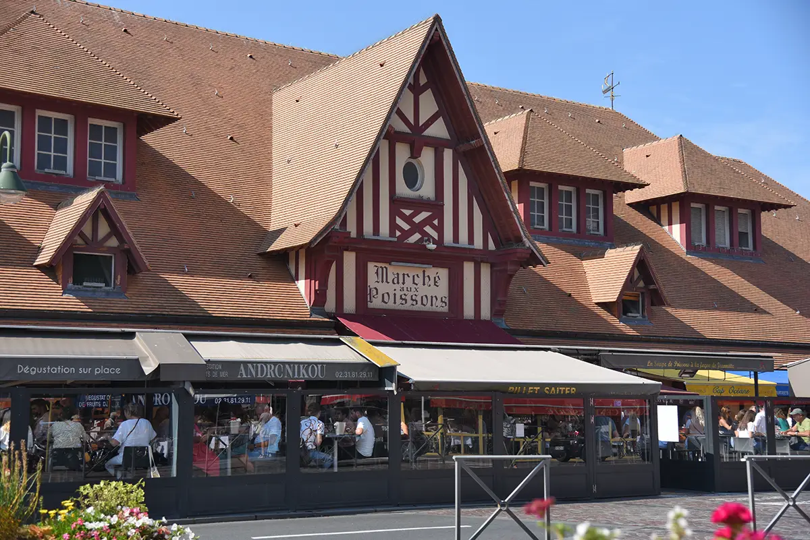
Marché
Marché aux poissons
Un lieu emblématique pour découvrir l’animation du port et les produits de la mer.
Entre plage, port et authenticité, découvrez le charme de la Côte Fleurie.
Présentation
Face à Deauville, Trouville-sur-Mer séduit par son ambiance chaleureuse et son caractère maritime. Entre les quais, la grande plage, les villas et le célèbre marché aux poissons, profitez d’une escapade pleine de charme et de gourmandise.
À ne pas manquer

Un lieu emblématique pour découvrir l’animation du port et les produits de la mer.
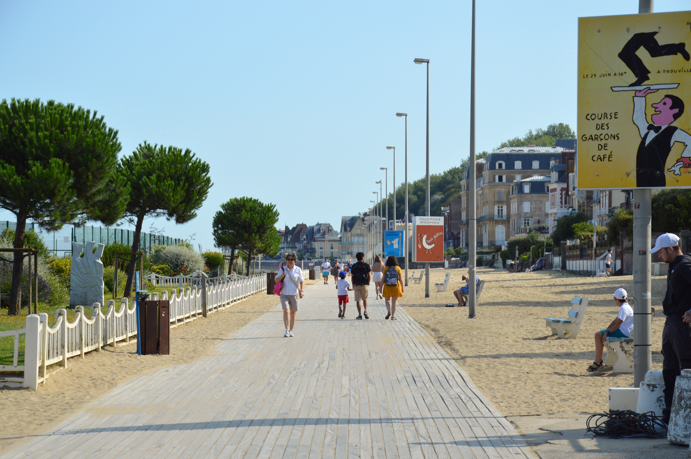
Une balade emblématique le long de la plage, entre cabines, mer et villas.
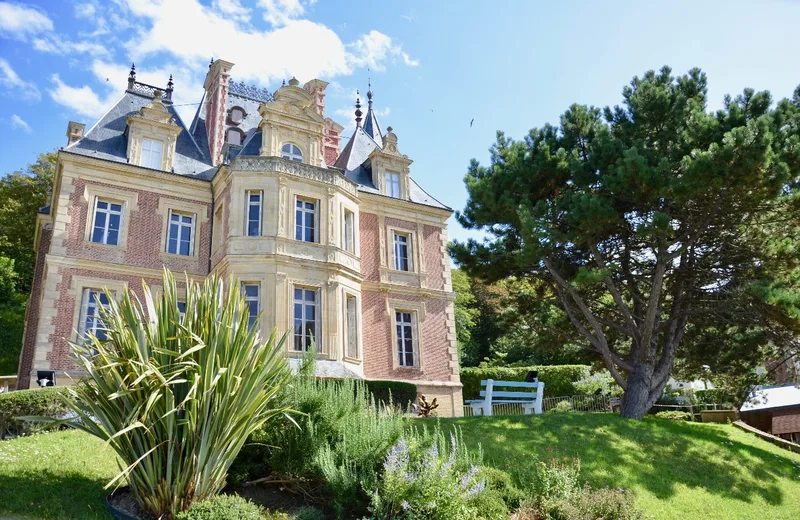
Une élégante villa du XIXe siècle qui abrite aujourd’hui le musée de Trouville.
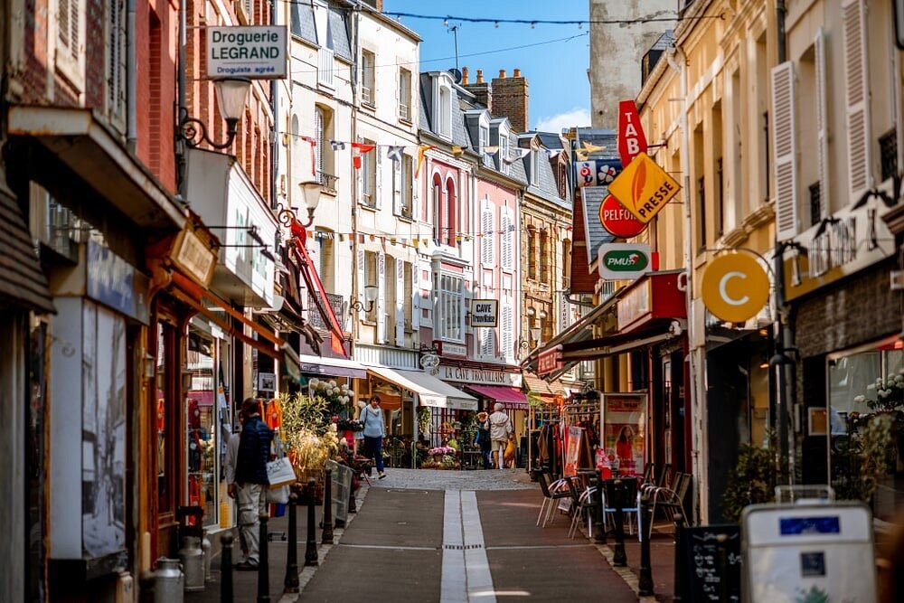
Une rue animée et colorée où se mêlent boutiques, restaurants et jolies façades.
Saveurs
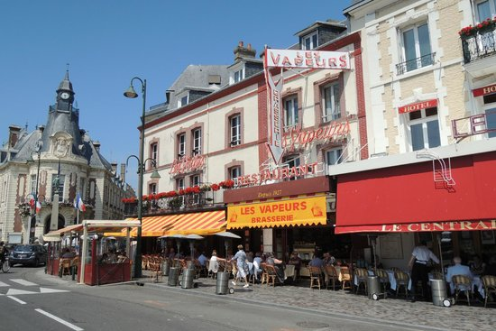
Une institution trouvillaise pour profiter d’une cuisine traditionnelle dans une ambiance animée.
Découvrir l'adresse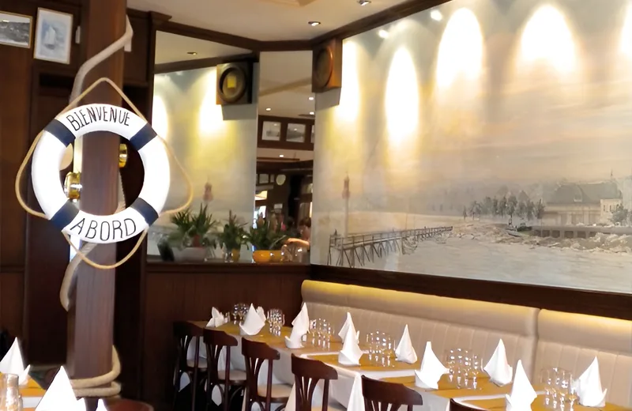
Une adresse tournée vers les produits de la mer dans une ambiance conviviale.
Découvrir l'adresse →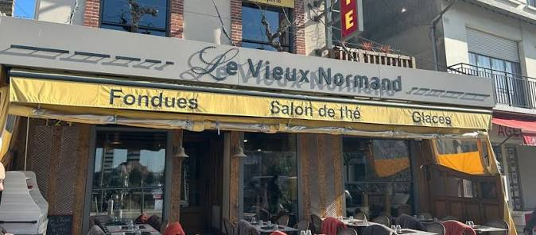
Une adresse conviviale pour savourer galettes et crêpes dans une ambiance chaleureuse.
Découvrir l'adresse →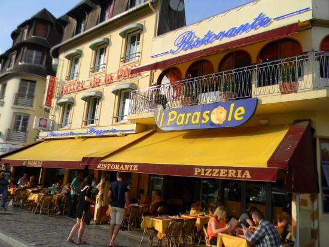
Une adresse italienne appréciée pour ses pizzas et ses spécialités gourmandes.
Découvrir l'adresseCoups de cœur
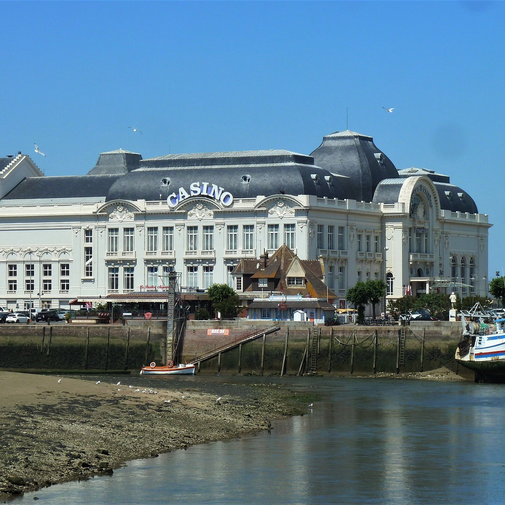
Un bâtiment emblématique du front de mer, reconnaissable à son architecture originale.
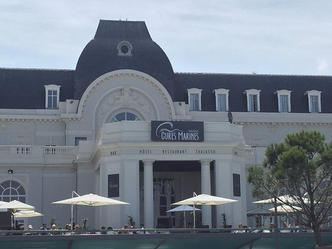
Un lieu historique face à la mer, remarquable pour son architecture et son élégante façade.
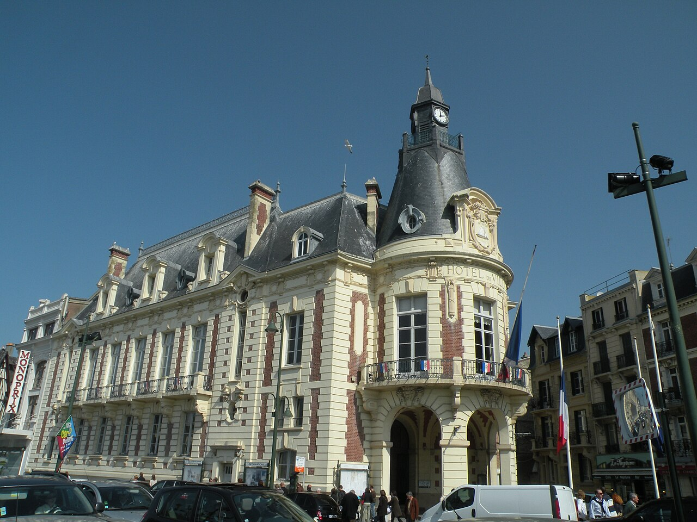
Un édifice remarquable au cœur de Trouville, témoin de l’élégance architecturale de la station.
Explorez Trouville